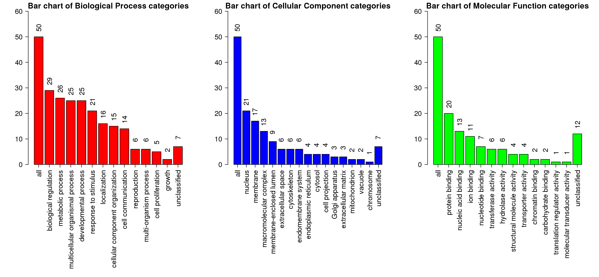

Summary (Result Download)
Enrich method: ORAOrganism:hsapiens
Enrichment Categories: geneontology_Biological_Process
Interesting gene list: proliferated_genes_sd_1531950642.txt. ID type: genesymbol
The interesting gene list contains 51 user IDs in which 50 user IDs are unambiguously mapped to the unique Entrez Gene IDs and 1 user IDs are mapped to multiple Entrez Gene IDs or could not be mapped to any Entrez Gene ID. The GO Slim summary are based upon the 50 unique Entrez Gene IDs.
Among the 50 unique Entrez Gene IDs, 43 IDs are annotated to the selected functional categories and also in the reference gene list, which are used for the enrichment analysis.
Reference gene list: uploads/background_genes_1531950642.txt ID type: genesymbol
The reference gene list contains 5000 IDs in which 4627 IDs are unambiguously mapped to the unique Entrez Gene IDs and 373 IDs are mapped to multiple Entrez Gene IDs or could not be mapped to any Entrez Gene ID.
Among the 4627 unique Entrez Gene IDs, 4020 IDs are annotated to the selected functional categories, which are used as the reference for the enrichment analysis.
Parameters for the enrichment analysis:
- Minimum number of Entrez Gene IDs in the category:5
- Maximum number of Entrez Gene IDs in the category:2000
- FDR Method:BH
- Significance Level: Top10
Mapped User IDs
| userid | Gene Symbol | Gene Name | Entrez Gene |
|---|---|---|---|
| USH1C | USH1C | USH1 protein network component harmonin | 10083 |
| IGF2BP1 | IGF2BP1 | insulin like growth factor 2 mRNA binding protein 1 | 10642 |
| DLL3 | DLL3 | delta like canonical Notch ligand 3 | 10683 |
| TMSB15A | TMSB15A | thymosin beta 15a | 11013 |
| POU6F2 | POU6F2 | POU class 6 homeobox 2 | 11281 |
| FOXN4 | FOXN4 | forkhead box N4 | 121643 |
| CNTFR | CNTFR | ciliary neurotrophic factor receptor | 1271 |
| COL2A1 | COL2A1 | collagen type II alpha 1 chain | 1280 |
| NKAIN4 | NKAIN4 | Sodium/potassium transporting ATPase interacting 4 | 128414 |
| ZNF280A | ZNF280A | zinc finger protein 280A | 129025 |
| C10orf82 | C10orf82 | chromosome 10 open reading frame 82 | 143379 |
| CLDN19 | CLDN19 | claudin 19 | 149461 |
| HFM1 | HFM1 | HFM1, ATP dependent DNA helicase homolog | 164045 |
| UGT3A2 | UGT3A2 | UDP glycosyltransferase family 3 member A2 | 167127 |
| GPC2 | GPC2 | glypican 2 | 221914 |
| GCK | GCK | glucokinase | 2645 |
| CECR2 | CECR2 | CECR2, histone acetyl-lysine reader | 27443 |
| DDX25 | DDX25 | DEAD-box helicase 25 | 29118 |
| PURG | PURG | purine rich element binding protein G | 29942 |
| TUBB2B | TUBB2B | tubulin beta 2B class IIb | 347733 |
| BTBD17 | BTBD17 | BTB domain containing 17 | 388419 |
| LIN28B | LIN28B | lin-28 homolog B | 389421 |
| LHX1 | LHX1 | LIM homeobox 1 | 3975 |
| MAGEA11 | MAGEA11 | MAGE family member A11 | 4110 |
| PAX2 | PAX2 | paired box 2 | 5076 |
| KIF1A | KIF1A | kinesin family member 1A | 547 |
| SLC6A15 | SLC6A15 | solute carrier family 6 member 15 | 55117 |
| BEX1 | BEX1 | brain expressed X-linked 1 | 55859 |
| TEX15 | TEX15 | testis expressed 15, meiosis and synapsis associated | 56154 |
| SLC7A10 | SLC7A10 | solute carrier family 7 member 10 | 56301 |
| FSTL5 | FSTL5 | follistatin like 5 | 56884 |
| DPYSL5 | DPYSL5 | dihydropyrimidinase like 5 | 56896 |
| SLCO1A2 | SLCO1A2 | solute carrier organic anion transporter family member 1A2 | 6579 |
| ZBTB8B | ZBTB8B | zinc finger and BTB domain containing 8B | 728116 |
| MAGED4 | MAGED4 | MAGE family member D4 | 728239 |
| MAGEA9B | MAGEA9B | MAGE family member A9B | 728269 |
| TP53TG3B | TP53TG3B | TP53 target 3B | 729355 |
| ZIC1 | ZIC1 | Zic family member 1 | 7545 |
| FSD1 | FSD1 | fibronectin type III and SPRY domain containing 1 | 79187 |
| HMGA2 | HMGA2 | high mobility group AT-hook 2 | 8091 |
| DPF1 | DPF1 | double PHD fingers 1 | 8193 |
| FBN3 | FBN3 | fibrillin 3 | 84467 |
| COL25A1 | COL25A1 | collagen type XXV alpha 1 chain | 84570 |
| SLC7A3 | SLC7A3 | solute carrier family 7 member 3 | 84889 |
| DLK1 | DLK1 | delta like non-canonical Notch ligand 1 | 8788 |
| FGF17 | FGF17 | fibroblast growth factor 17 | 8822 |
| GAL3ST3 | GAL3ST3 | galactose-3-O-sulfotransferase 3 | 89792 |
| SPSB4 | SPSB4 | splA/ryanodine receptor domain and SOCS box containing 4 | 92369 |
| PCYT1B | PCYT1B | phosphate cytidylyltransferase 1, choline, beta | 9468 |
| IGDCC3 | IGDCC3 | immunoglobulin superfamily DCC subclass member 3 | 9543 |
User IDs mapped to multiple Entrtez IDs or not mapped
| userid |
|---|
| C1orf114 |
GOSlim summary for the user list genes
Each Biological Process, Cellular Component and Molecular Function category is represented by a red, blue and green bar, repectively.The height of the bar represents the number of user list genes observed in the category. 
Detailed information of the enriched categories
The statistics

- C: the number of reference genes in the category
- O: the number of genes in the user gene list and also in the category
- E: The expected number in the category
- R: ratio of enrichment
- PValue: p value from hyergeometric test
- FDR: FDR from BH
- GO:0050953 sensory perception of light stimulus
- GO:2000036 regulation of stem cell population maintenance
- GO:0007399 nervous system development
- GO:0048793 pronephros development
- GO:0051028 mRNA transport
- GO:2000698 positive regulation of epithelial cell differentiation involved in kidney development
- GO:2000779 regulation of double-strand break repair
- GO:0007601 visual perception
- GO:0072224 metanephric glomerulus development
- GO:0006403 RNA localization
| ID:GO:0050953 Name:sensory perception of light stimulus | |||
|---|---|---|---|
| C=60; O=5; E=0.64; R=7.79; PValue=3.9e-04; FDR=1e+00 | |||
| userid | Gene Symbol | Gene Name | Entrez Gene |
| USH1C | USH1C | USH1 protein network component harmonin | 10083 |
| POU6F2 | POU6F2 | POU class 6 homeobox 2 | 11281 |
| COL2A1 | COL2A1 | collagen type II alpha 1 chain | 1280 |
| CLDN19 | CLDN19 | claudin 19 | 149461 |
| PAX2 | PAX2 | paired box 2 | 5076 |
| ID:GO:2000036 Name:regulation of stem cell population maintenance | |||
|---|---|---|---|
| C=5; O=2; E=0.05; R=37.4; PValue=1.1e-03; FDR=1e+00 | |||
| userid | Gene Symbol | Gene Name | Entrez Gene |
| PAX2 | PAX2 | paired box 2 | 5076 |
| HMGA2 | HMGA2 | high mobility group AT-hook 2 | 8091 |
| ID:GO:0007399 Name:nervous system development | |||
|---|---|---|---|
| C=837; O=18; E=8.95; R=2.01; PValue=1.35e-03; FDR=1e+00 | |||
| userid | Gene Symbol | Gene Name | Entrez Gene |
| IGF2BP1 | IGF2BP1 | insulin like growth factor 2 mRNA binding protein 1 | 10642 |
| DLL3 | DLL3 | delta like canonical Notch ligand 3 | 10683 |
| POU6F2 | POU6F2 | POU class 6 homeobox 2 | 11281 |
| FOXN4 | FOXN4 | forkhead box N4 | 121643 |
| CNTFR | CNTFR | ciliary neurotrophic factor receptor | 1271 |
| COL2A1 | COL2A1 | collagen type II alpha 1 chain | 1280 |
| ZNF280A | ZNF280A | zinc finger protein 280A | 129025 |
| GPC2 | GPC2 | glypican 2 | 221914 |
| CECR2 | CECR2 | CECR2, histone acetyl-lysine reader | 27443 |
| TUBB2B | TUBB2B | tubulin beta 2B class IIb | 347733 |
| LHX1 | LHX1 | LIM homeobox 1 | 3975 |
| PAX2 | PAX2 | paired box 2 | 5076 |
| BEX1 | BEX1 | brain expressed X-linked 1 | 55859 |
| DPYSL5 | DPYSL5 | dihydropyrimidinase like 5 | 56896 |
| ZIC1 | ZIC1 | Zic family member 1 | 7545 |
| DPF1 | DPF1 | double PHD fingers 1 | 8193 |
| COL25A1 | COL25A1 | collagen type XXV alpha 1 chain | 84570 |
| FGF17 | FGF17 | fibroblast growth factor 17 | 8822 |
| ID:GO:0048793 Name:pronephros development | |||
|---|---|---|---|
| C=6; O=2; E=0.06; R=31.16; PValue=1.63e-03; FDR=1e+00 | |||
| userid | Gene Symbol | Gene Name | Entrez Gene |
| LHX1 | LHX1 | LIM homeobox 1 | 3975 |
| PAX2 | PAX2 | paired box 2 | 5076 |
| ID:GO:0051028 Name:mRNA transport | |||
|---|---|---|---|
| C=7; O=2; E=0.07; R=26.71; PValue=2.27e-03; FDR=1e+00 | |||
| userid | Gene Symbol | Gene Name | Entrez Gene |
| IGF2BP1 | IGF2BP1 | insulin like growth factor 2 mRNA binding protein 1 | 10642 |
| DDX25 | DDX25 | DEAD-box helicase 25 | 29118 |
| ID:GO:2000779 Name:regulation of double-strand break repair | |||
|---|---|---|---|
| C=7; O=2; E=0.07; R=26.71; PValue=2.27e-03; FDR=1e+00 | |||
| userid | Gene Symbol | Gene Name | Entrez Gene |
| TEX15 | TEX15 | testis expressed 15, meiosis and synapsis associated | 56154 |
| HMGA2 | HMGA2 | high mobility group AT-hook 2 | 8091 |
| ID:GO:0007601 Name:visual perception | |||
|---|---|---|---|
| C=57; O=4; E=0.61; R=6.56; PValue=2.97e-03; FDR=1e+00 | |||
| userid | Gene Symbol | Gene Name | Entrez Gene |
| POU6F2 | POU6F2 | POU class 6 homeobox 2 | 11281 |
| COL2A1 | COL2A1 | collagen type II alpha 1 chain | 1280 |
| CLDN19 | CLDN19 | claudin 19 | 149461 |
| PAX2 | PAX2 | paired box 2 | 5076 |
| ID:GO:0072224 Name:metanephric glomerulus development | |||
|---|---|---|---|
| C=8; O=2; E=0.09; R=23.37; PValue=3e-03; FDR=1e+00 | |||
| userid | Gene Symbol | Gene Name | Entrez Gene |
| LHX1 | LHX1 | LIM homeobox 1 | 3975 |
| PAX2 | PAX2 | paired box 2 | 5076 |
| ID:GO:0006403 Name:RNA localization | |||
|---|---|---|---|
| C=9; O=2; E=0.1; R=20.78; PValue=3.84e-03; FDR=1e+00 | |||
| userid | Gene Symbol | Gene Name | Entrez Gene |
| IGF2BP1 | IGF2BP1 | insulin like growth factor 2 mRNA binding protein 1 | 10642 |
| DDX25 | DDX25 | DEAD-box helicase 25 | 29118 |